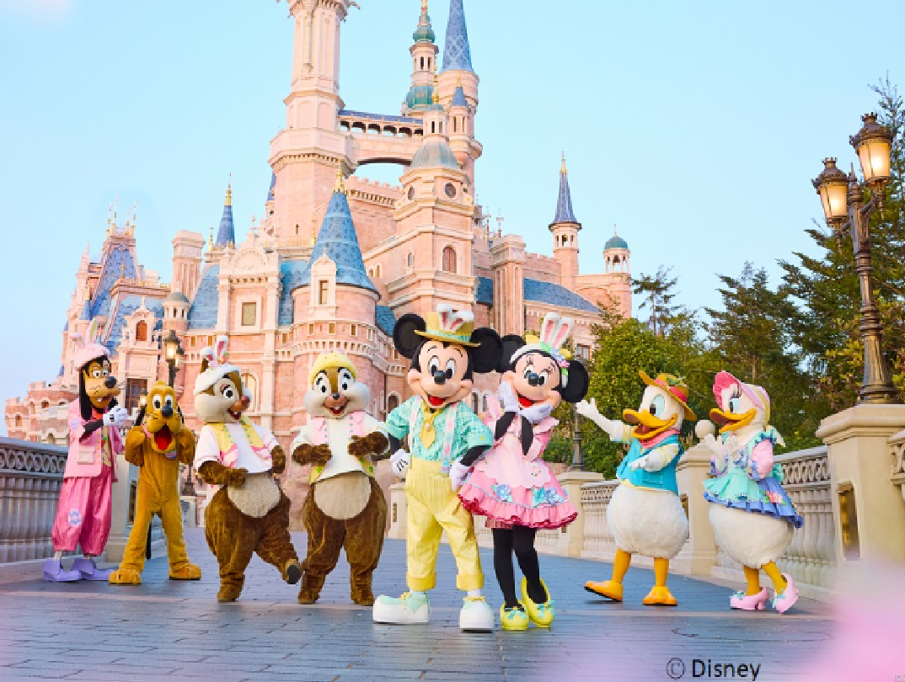
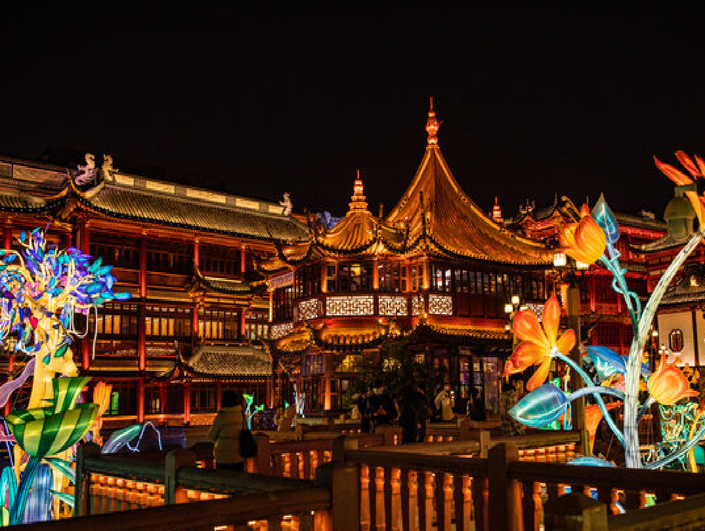
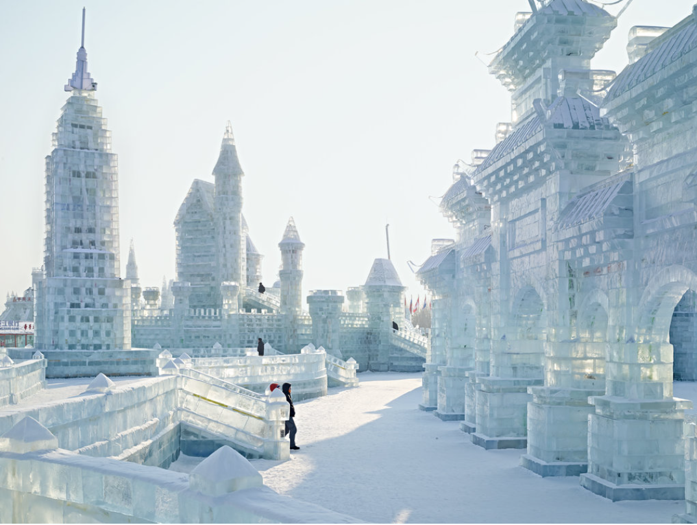

My Favourite Cities & Countries On the Earth
Home Page
☃ This page will show my favorite attractions in various countries or cities ☃
𝐼'𝑣𝑒 𝑡𝑟𝑎𝑣𝑒𝑙𝑒𝑑 𝑡𝑜 𝑚𝑎𝑛𝑦 𝑝𝑙𝑎𝑐𝑒𝑠 𝑙𝑖𝑘𝑒 𝐽𝑎𝑝𝑎𝑛, 𝑇ℎ𝑎𝑖𝑙𝑎𝑛𝑑, 𝑡ℎ𝑒 𝑈𝐾, 𝑎𝑛𝑑 𝑆𝑝𝑎𝑖𝑛. 𝐸𝑣𝑒𝑟𝑦 𝑑𝑒𝑠𝑡𝑖𝑛𝑎𝑡𝑖𝑜𝑛 𝑙𝑒𝑓𝑡 𝑎 𝑠𝑡𝑟𝑜𝑛𝑔 𝑖𝑚𝑝𝑟𝑒𝑠𝑠𝑖𝑜𝑛 𝑎𝑛𝑑 𝑡𝑎𝑢𝑔ℎ𝑡 𝑚𝑒
𝑠𝑜𝑚𝑒𝑡ℎ𝑖𝑛𝑔 𝑛𝑒𝑤 𝑎𝑏𝑜𝑢𝑡 𝑑𝑖𝑓𝑓𝑒𝑟𝑒𝑛𝑡 𝑐𝑢𝑙𝑡𝑢𝑟𝑒𝑠. 𝑀𝑦 𝑓𝑎𝑣𝑜𝑟𝑖𝑡𝑒𝑠 𝑎𝑟𝑒 𝐶ℎ𝑖𝑛𝑎 𝑎𝑛𝑑 𝐽𝑎𝑝𝑎𝑛. 𝐶ℎ𝑖𝑛𝑎 𝑖𝑠 𝑠𝑜 𝑏𝑖𝑔 𝑡ℎ𝑎𝑡 𝐼'𝑣𝑒 𝑜𝑛𝑙𝑦 𝑠𝑒𝑒𝑛 ℎ𝑎𝑙𝑓 𝑜𝑓 𝑖𝑡,
𝑎𝑛𝑑 𝐼'𝑚 𝑒𝑎𝑔𝑒𝑟 𝑡𝑜 𝑒𝑥𝑝𝑙𝑜𝑟𝑒 𝑚𝑜𝑟𝑒 𝑜𝑓 𝑖𝑡𝑠 𝑝𝑟𝑜𝑣𝑖𝑛𝑐𝑒𝑠 𝑎𝑛𝑑 𝑐𝑖𝑡𝑖𝑒𝑠 𝑡𝑜 𝑒𝑥𝑝𝑒𝑟𝑖𝑒𝑛𝑐𝑒 𝑣𝑎𝑟𝑖𝑜𝑢𝑠 𝑒𝑡ℎ𝑛𝑖𝑐 𝑐𝑢𝑙𝑡𝑢𝑟𝑒𝑠. 𝐼 𝑎𝑙𝑠𝑜 𝑤𝑎𝑛𝑡 𝑡𝑜 𝑟𝑒𝑣𝑖𝑠𝑖𝑡 𝑚𝑦 ℎ𝑜𝑚𝑒𝑡𝑜𝑤𝑛,
𝑇𝑎𝑖𝑤𝑎𝑛 𝑎𝑛𝑑 𝐺𝑎𝑛𝑠𝑢--𝑇𝑎𝑖𝑤𝑎𝑛 𝑓𝑜𝑟 𝑎𝑙𝑙 𝑡ℎ𝑒 𝑓𝑢𝑛 𝑚𝑒𝑚𝑜𝑟𝑖𝑒𝑠, 𝑎𝑛𝑑 𝐺𝑎𝑛𝑠𝑢 𝑓𝑜𝑟 𝑡ℎ𝑒 𝑚𝑎𝑛𝑦 𝑤𝑎𝑟𝑚 𝑟𝑒𝑙𝑎𝑡𝑖𝑣𝑒𝑠 𝑡ℎ𝑒𝑟𝑒. 𝐸𝑣𝑒𝑛 𝑡ℎ𝑜𝑢𝑔ℎ 𝐼'𝑣𝑒 𝑏𝑒𝑒𝑛 𝑡𝑜 𝐽𝑎𝑝𝑎𝑛 𝑎𝑏𝑜𝑢𝑡 𝑠𝑒𝑣𝑒𝑛 𝑡𝑖𝑚𝑒𝑠,
𝐼 𝑠𝑡𝑖𝑙𝑙 ℎ𝑜𝑝𝑒 𝑡𝑜 𝑔𝑜 𝑏𝑎𝑐𝑘 𝑡𝑜 𝑤𝑒𝑎𝑟 𝑎 𝑘𝑖𝑚𝑜𝑛𝑜 𝑎𝑛𝑑 𝑠𝑒𝑒 𝑎 𝑚𝑎𝑗𝑜𝑟 𝑓𝑖𝑟𝑒𝑤𝑜𝑟𝑘𝑠 𝑠ℎ𝑜𝑤. 𝐵𝑒𝑠𝑖𝑑𝑒𝑠, 𝐼 ℎ𝑎𝑣𝑒 𝑡𝑤𝑜 𝑚𝑜𝑟𝑒 𝑏𝑖𝑔 𝑔𝑜𝑎𝑙𝑠: 𝑡𝑜 𝑠𝑒𝑒 𝑚𝑦 𝑓𝑎𝑣𝑜𝑟𝑖𝑡𝑒 𝐾-𝑝𝑜𝑝 𝑖𝑑𝑜𝑙
𝑎𝑛𝑑 𝑗𝑜𝑖𝑛 𝑡ℎ𝑒𝑖𝑟 𝑐𝑜𝑛𝑐𝑒𝑟𝑡𝑠 𝑖𝑛 𝑆𝑜𝑢𝑡ℎ 𝐾𝑜𝑟𝑒𝑎, 𝑎𝑛𝑑 𝑡𝑜 𝑠𝑒𝑒 𝑡ℎ𝑒 𝑎𝑚𝑎𝑧𝑖𝑛𝑔 𝑎𝑢𝑟𝑜𝑟𝑎𝑠 𝑖𝑛 𝐼𝑐𝑒𝑙𝑎𝑛𝑑.
𝐄𝐚𝐜𝐡 𝐚𝐭𝐭𝐫𝐚𝐜𝐭𝐢𝐨𝐧 𝐡𝐚𝐬 𝐢𝐭𝐬 𝐨𝐰𝐧 𝐮𝐧𝐢𝐪𝐮𝐞 𝐟𝐞𝐚𝐭𝐮𝐫𝐞𝐬, 𝐰𝐡𝐞𝐭𝐡𝐞𝐫 𝐢𝐭’𝐬 𝐢𝐧 𝐢𝐭𝐬 𝐚𝐩𝐩𝐞𝐚𝐫𝐚𝐧𝐜𝐞,
𝐜𝐮𝐥𝐭𝐮𝐫𝐚𝐥 𝐬𝐢𝐠𝐧𝐢𝐟𝐢𝐜𝐚𝐧𝐜𝐞, 𝐨𝐫 𝐡𝐢𝐬𝐭𝐨𝐫𝐢𝐜𝐚𝐥 𝐛𝐚𝐜𝐤𝐠𝐫𝐨𝐮𝐧𝐝！
① ℂ𝕙𝕚𝕟𝕒
1. Beijing 北京
2. Shanghai 上海
Shanghai Disneyland 上海迪士尼

Shanghai City God Temple 城隍庙

3. Taiwan 台湾
4. Harbin 哈尔滨
Harbin Ice and Snow World 冰雪大世界

5. Hangzhou 杭州
Hello Kitty Park 凯蒂猫主题乐园

② 𝕁𝕒𝕡𝕒𝕟
1. Tokyo 東京
Tokyo DisneySea 東京ディズニーシー
Akihabara 秋葉原

2. Nara 奈良
3. Hokkaido 北海道
③ 𝑬𝒏𝒈𝒍𝒂𝒏𝒅
1. London